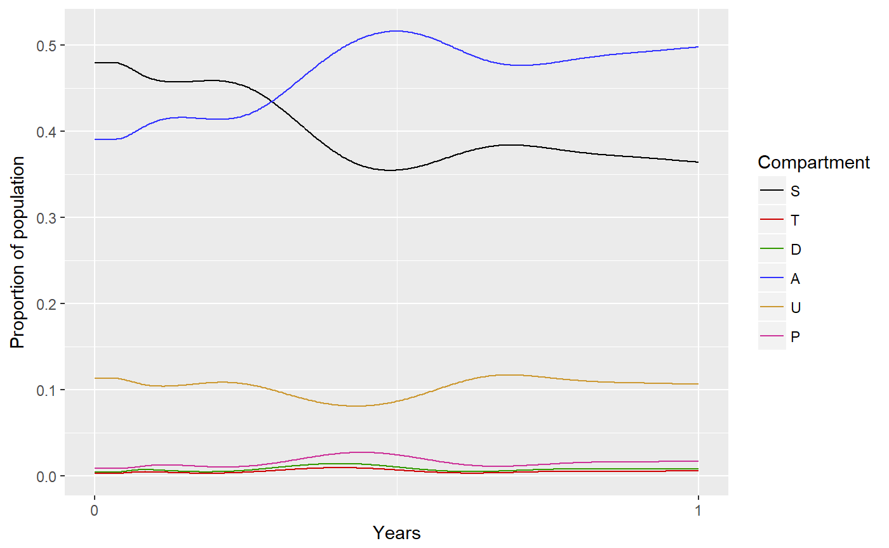
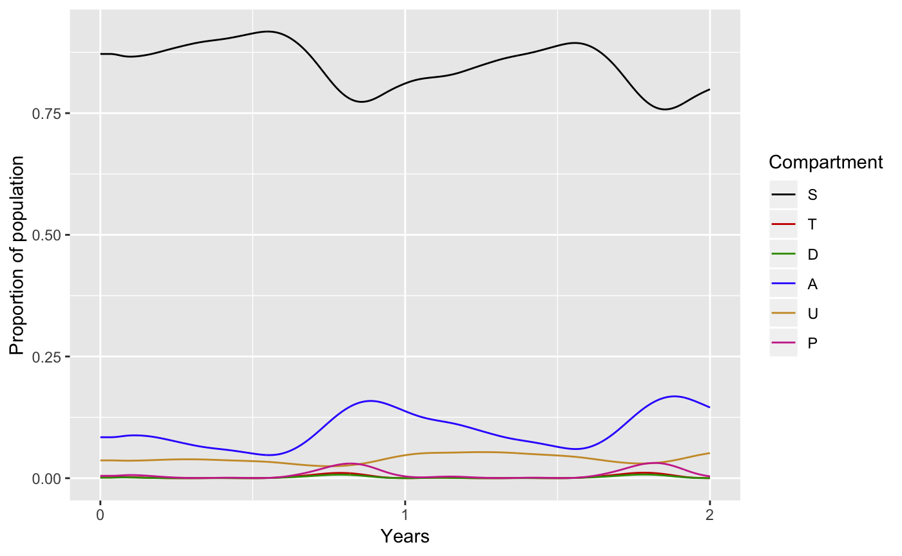
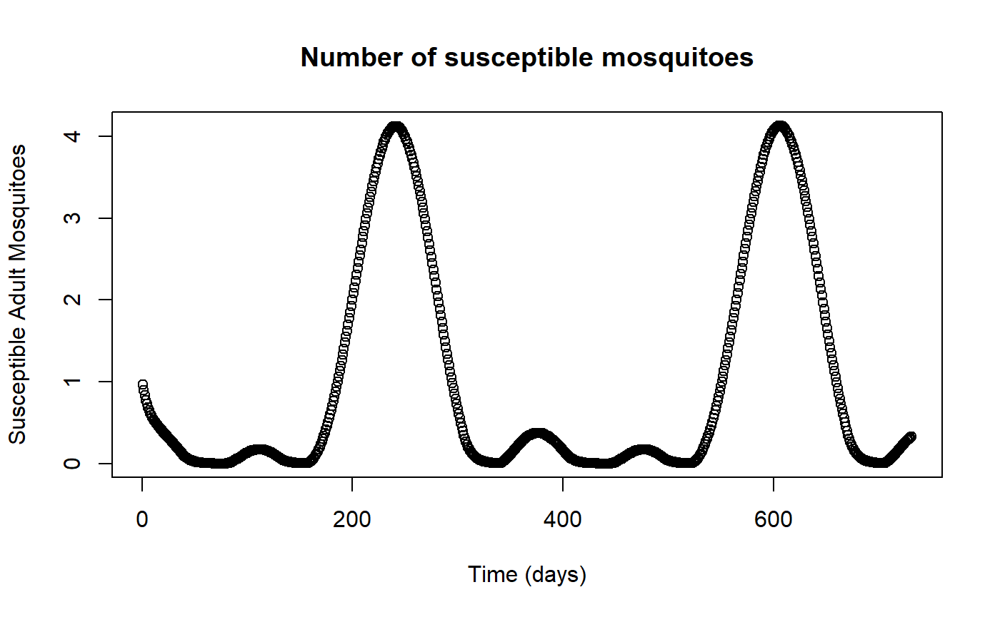

run_model.RmdWithin this package there are 2 ways to run the deterministic base model:
run_modelcreate_r_modelThe run_model function solves the base model, which can be found in inst/extdata/odin_model.R. This function is designed to quickly simulate transmission dynamics, and as such there are fewer parameters that you are able to change. Whereas, create_r_model allows you to specify what model you would like to run. For more information please see the other vignette.
This vignette focuses on using the run_model function to simulate the base model. It returns the following list with 2 elements:
dat - the simulation output.plot - a plot of the 6 human compartments.As illustrated below, without specifying any function arguments, create_r_model will run a simulation for 1 year at an EIR of 10, with a treatment coverage equal to 40% for Tororo, Uganda.

To change simulation settings there are 5 optional function arguments:
age - Vector of age brackets.EIR - Numeric of annual EIR.ft - Numeric of proportion of symptomatic cases recieving treatment.admin2 - Character of admin unit.time - Numeric of length of time that the model will run for in days.For example, to simulate Thies, Senegal for a given vector of ages, at an EIR of 1, for 2 years with 60% treatment coverage:

Other model outputs, such as the number of suceptible adult mosquitoes, can be plotted by interacting with the dat data frame returned by run_model:
